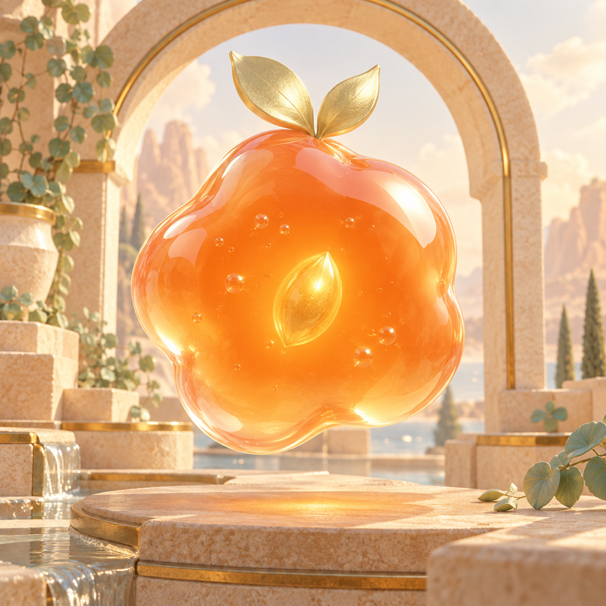
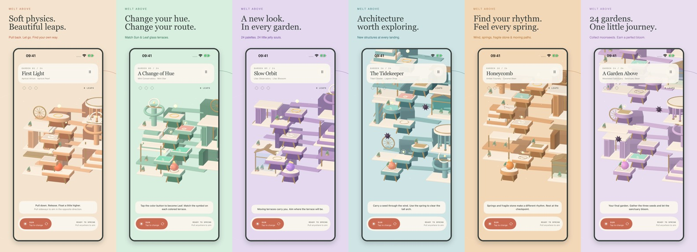

melt
above.
A little jelly. A higher world. Spring through floating architectural gardens, change your hue, and gather a little light.


Find your next leap.
Pull back and spring
Touch anywhere in the garden, pull down, and release. Pull left to travel right, or right to travel left. A longer downward pull adds height. You can jump only when resting on a terrace.
Match Sun and Leaf
Use the hue button, including in midair. Match the sun or leaf symbol on glass before landing. Ordinary stone catches both hues. Changing hue on mismatched glass makes you fall through it.
Gather moonseeds
Reach the golden arch for one star. Collect all three seeds for two. All seeds, no falls, and the garden's leap target earns a perfect three-star bloom.
Read the architecture
Moving terraces carry you. Ridged brass pads boost the next jump. Cracked stone crumbles after 2.4 seconds. Wind bends the flight preview. Avoid dark thorn flowers.
Another little beginning
Pale rings are checkpoints. Falls return you to the latest one and preserve collected seeds. Retry in Pause starts a fresh run. Every level is available from The gardens.
Make yourself at home
Settings control sound, ambient music, haptics, the flight preview, and decorative motion. Reset garden progress deletes local records and cosmetic unlocks after confirmation.
Something needs a little care?
Email the garden number, your device model and iOS version, and a short description of what happened. Include only the information needed to investigate. Please do not send passwords or sensitive documents.
Email OanaProgress is stored locally on your device. The game needs no account or connection to play. Haptics require a supported physical device, and audio respects your device settings.